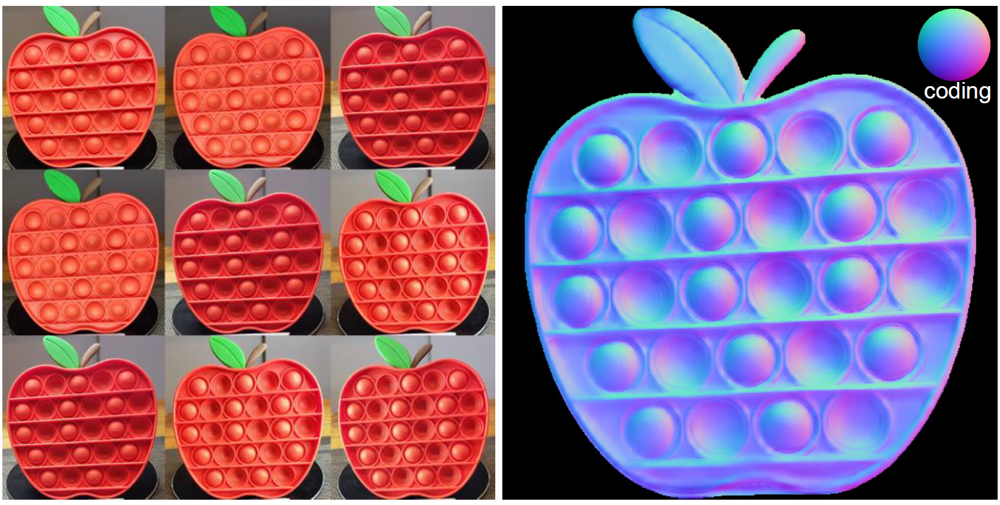

Welcome to Satoshi Ikehata's Home Page

| Satoshi Ikehata, PhD |
| Associate Proffesor in National Institute of Informatics (Since 2017) |
| Specially Appointed Associate Proffesor at Recognition and Learning Algoritym Laboratory in Tokyo Tech (Since 2023) |
| Visiting Researcher at Aizawa-Yamakata-Matsui Lab in UTokyo (Since 2020) |
| Address: 2-1-2 Hitotsubashi, Chiyoda-ku, Tokyo 101-8430 |
| E-mail: sikehata@nii.ac.jp |
| (curriculum vitae) |
I am currently looking for talented Ph.D students at SOKENDAI and interns at NII (NII International Internship Program, 2025 1st Call Applications must be sent to me by the end of March 2025, at 17:00 JST. Please see more detials
NII International Internship Program: 2025 1st Call
SOKENDAI Ph.D Program
About me
- From June 2014 to November 2016, I was a post-doc researcher in Washington University in St. Louis and worked with Dr. Yasutaka Furukawa.
- I got my Ph. D in 2014 and MS in 2011 in University of tokyo under the supervision of Prof. Kiyoharu Aizawa.
- I got my BA of Psychology from the University of Tokyo in 2009 under the supervision of Prof. Takao Sato.
- I worked for Visual Computing Group at Microsoft Research Asia as a visiting student in 2011, supervised by Dr. Yasuyuki Matsushita.
NEWS
| 6/2022 | Project website of CVPR2023 work is now available. |
| 6/2022 | Project website of CVPR2022 work is now available. |
| 11/2021 | Source code of BMVC2021 work is now available. |
| 8/2018 | Source code of ECCV2018 work is now available. |
| 7/2014 | Project page of ICCV2015 work is now available. |
| 7/2014 | Souce code of our TPAMI2014 work is now available. |
| 7/2014 | Souce code of our CVPR2014 work is now available. |
| 7/2012 | Souce code of our CVPR2012 work is now available. |
| 3/2012 | Open a new home page. |
Class (SOKENDAI)
Fall 2020: Fundamentals of Media Processing
Research Interests
3D Scene Reconstruction, Time-of-flight Imaging, Image Super-resolution, Virtual and Augmented Reality, Human Cognition and Perception
Selected Papers
Full publication list is available at researchmap.|
Gumble-NeRF: Representing Unseen Objects as Part-compositional Neural Radiance Feilds. Yusuke Sekikawa, Chingwei Hsu, Satoshi Ikehata, Rei Kawakami, Ikuro Sato. In proceedings of International Conference on Image Processing (ICIP), 2024. |
|||||||||||||||||||||||||||||||||||||||||||
| Physics-Free Spectrally Multiplexed Photometric Stereo under Unknown Spectral Composition. Satoshi Ikehata, Yuta Asano. In proceedings of European Conference on Computer Vision (ECCV), 2024 (accepted as an oral presentation). |
|||||||||||||||||||||||||||||||||||||||||||
| Towards Single-Shot Photometric Stereo through Material Estimation and Relighting. Ashish Tiwari , Satoshi Ikehata, Shanmuganathan Raman. In proceedings of European Conference on Computer Vision (ECCV), 2024. |
|||||||||||||||||||||||||||||||||||||||||||
| Entity-NeRF: Detecting and Removing Moving Entities in Urban Scenes. Takashi Otonari, Satoshi Ikehata, Kiyoharu Aizawa. In proceedings of CVF/IEEE Computer Vision and Pattern Recognition (CVPR), 2024 (paper (arxiv), website). |
|||||||||||||||||||||||||||||||||||||||||||
| Field-of-View IoU for Object Detection in 360° Images. Miao Cao, Satoshi Ikehata, Kiyoharu Aizawa. IEEE Transactions on Image Procession (TIP), 2023 (paper). |
|||||||||||||||||||||||||||||||||||||||||||
| Scalable, Detailed and Mask-free Universal Photometric Stereo Satoshi Ikehata. In proceedings of CVF/IEEE Computer Vision and Pattern Recognition (CVPR), 2023. (accepted as a highlight paper, 2.5%) (paper (arxiv), code (github))  Non-uniform Sampling Strategies for NeRF on 360 images | Takashi Otonari, Satoshi Ikehata, Kiyoharu Aizawa. In proceedings of British Machine Vision Conference (BMVC), 2022. |
Saliency-Based Multiple Region of Interest Detection From a Single 360° Image | Yuki Sawabe, Satoshi Ikehata, Kiyoharu Aizawa. In IEEE Access, vol. 10, pp. 89124-89133, 2022. |
Does Physical Interpretability of Observation Map Improve the Photometric Stereo Network? |
Satoshi Ikehata. In proceedings of IEEE International Conference on Image Processing (ICIP), 2022. (paper) |
Dual-ERP representation for Object Detection in 360 degree images. |
Miao Cao, Satoshi Ikehata, Kiyoharu Aizawa. In proceedings of IEEE International Conference on Image Processing (ICIP), 2022.  |
Universal Photometric Stereo Network using Global Lighting Contexts. |
Satoshi Ikehata. In proceedings of CVF/IEEE Computer Vision and Pattern Recognition (CVPR), 2022 (project site). |
PS-Transformer: Learning Sparse Photometric Stereo Network using Self-Attention Mechanism. |
Satoshi Ikehata. In proceedings of British Machine Vision Conference (BMVC), 2021 (paper, github). |
Intersection Prediction from Single 360° Image via Deep Detection of Possible Direction of Travel. |
Naoki Sugimoto, Satoshi Ikehata and Kiyoharu Aizawa. In proceedings of British Machine Vision Conference (BMVC), 2021 (paper).  360° Single Image Super Resolution via Distortion-Aware Network and Distorted Perspective Images. |
Akito Nishiyama, Satoshi Ikehata, Kiyoharu Aizawa. In proceedings of International Conference on Image Processing (ICIP), 2021 (paper). |
CNN-PS: CNN-based Photometricc Stereo for General Non-Convex Surfaces. |
Satoshi Ikehata. In proceedings of European Conference on Computer Vision (ECCV), 2018 (paper, supplementary, codes (github)). |
Efficiency-enhanced cost-volume filtering featuring coarse-to-fine strategy. |
Ryosuke Furuta, Satoshi Ikehata, Toshihiko Yamaskai, Kiyoharu Aizawa. Multimedia Tools Appl. 77(10): 12469-12491, 2018 (paper). |
Scale Drift Correction of Camera Geo-Localization using Geo-Tagged Images |
Kazuya Iwami, Satoshi Ikehata, Kiyoharu Aizawa. 6th Workshop on Computer Vision for Road Scene Understanding and Autonomous Driving (ECCV2018 Workshop), 2018 (preprint). |
From Bayesian Sparsity to Gated Recurrent Nets |
Hao He, Bo Xin, Satoshi Ikehata, David P. Wipf. In proceedings of Neural Information Processing Systems（NIPS）, 2017 (accepted as an oral presentation, 1.20%): 5560-5570, 2017 (NIPS proceedings). |
Panoramic Structure from Motion via Geometric Relationship Detection |
Satoshi Ikehata, Ivaylo Boyadzhiev, Qi Shan, Yasutaka Furukawa. CoRR abs/1612.01256, 2016 (arXiv paper). |
Structured Indoor Modeling |
Satoshi Ikehata, Hang Yan and Yasutaka Furukawa. In proceedings of IEEE International Conference on Computer Vision (ICCV), 2015 (accepted as an oral presentation, 3.30%) (project page). |
Coarse-to-Fine Strategy for Efficient Cost-Volume Filtering |
Ryosuke Furuta, Satoshi Ikehata, Toshihiko Yamasaki and Kiyoharu Aizawa. In proceedings of IEEE International Conference on Image Procession(ICIP), 2014 (paper).  Photometric Stereo using Constrained Bivariate Regression for General Isotropic Surfaces |
Satoshi Ikehata and Kiyoharu Aizawa. In proceedings of Computer Vision and Pattern Recognition (CVPR), 2014 (accepted as an oral presentation, 5.76%) (paper, supplementary, source codes).  Photometric Stereo using Sparse Bayesian Regression for General Diffuse Surfaces |
Satoshi Ikehata, David Wipf, Yasuyuki Matsushita and Kiyoharu Aizawa. IEEE Transactions on Pattern Analysis and Machine Intelligence (TPAMI), 2014 (source codes).  Depth Map Inpainting and Super-Resolution based on Internal Statistics of Geometry and Appearance |
Satoshi Ikehata, Ji-Ho Cho and Kiyoharu Aizawa. In proceedings of IEEE International Conference on Image Procession(ICIP), 2013, (pdf). |
Depth Map Upsampling using Cost-Volume Filtering |
Ji-Ho Cho, Satoshi Ikehata, Hyunjin Yoo, Margrit Gelautz and Kiyoharu Aizawa. In proceedings of 11th IEEE IVMSP Workshop: 3D Image/Video Technologies and Applications, 2013, (pdf). |
Confidence-based Refinement of Corrupted Depth Maps |
Satoshi Ikehata and Kiyoharu Aizawa. In proceedings of Signal & Information Processing Association Annual Summit and Conference (APSIPA ASC), 2012, (pdf). |
Robust Photometric Stereo using Sparse Regression |
Satoshi Ikehata, David Wipf, Yasuyuki Matsushita, and Kiyoharu Aizawa. In proceedings of Computer Vision and Pattern Recognition (CVPR), 2012, (pdf, supplementary, codes). |